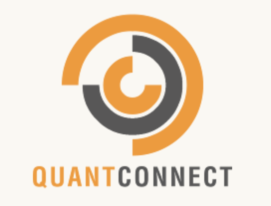

Hazim's Github Page

About Me
Just finished school. 4 years of taking up Mechanical Engineering skills and knowledge was enriching to say the least. But I strongly feel an urge take up a new challenge. One that will grant me bountiful opportunities. So I find myself learning an array of skills that relate to Financial Technology. From learning the javascrpt language, to understanding useful tools such as git, it has thus far made me rediscover my interests, and ultimately what I intend to pursue in the future.
Notable Experiences
Internship with Schlumberger
Year 3 Design Project
Final Year Project
NUS FinTechSG
Side Projects
Internship With Schlumberger
Schlumberger is an oil and gas services company. In short, it manufactures and provides sevices to a long list of oil and gas companies (eg. ExxonMobil, Shell). In the second half of 2018, I had the privilege of doing an internship with Schlumberger in SWTC, short for Singapore Well Testing Centre (SWTC). The building is a hub of the development and production of the multiphase flowmeter (MPFM), which is a vital equipment for oil extraction.
My official title was Mechanical Engineer (Intern). I was attached to the Engineering department in SWTC where the department's main goal is to develop a new version of the MPFM. My job scope includes creating virtual 3D models for the parts that contribute to the end product using Creo, performing tolerance stack on parts that go to the final assembly and help out with calculations for the electrical and electronics team.

Year 3 Design Project

A project where I led a team of 6 to build an autonomous grass-cutting robot. The basic idea is that the system allows us to input a route and when the cutting operation starts, the robot will follow the designated route through the utilisation of a Real-Time Kinematics system that compliments and enhances the accuracy of the GPS module in the circuit. An accuracy of 1-2cm to be exact.
As the head of the team, I was in charge of coordinating ideas, developing a timeline to meet the assigned deadlines and be the link between stakeholders, module coordinaters and the team members. In addition, I had the opportunity to use my CAD and structural analysis skills to create 3D visualisations of the robot and carry out simulations to ensure the dimensions are obtained before the team starts machining the chassis of the robot.
Final Year Project
For my final year project (an honours requirement), I took up a project titled: Design of Supersonic Gas Ejectors.
It is a calculation intensive project where I had to gather a set of continuity equations that relate to the calculation of the pressures within a supersonic gas ejector. After picking out the equations, operation conditions such as temperatures, input pressures, input mass flow rates and fixed. The project aims to find the optimal pressure of the exit of the supersonic gas ejector as the exit diameter is varied.

NUS FintechSG
This is the first course that I have embarked on to hone my skills in the field of software development, and more specifically in the Fintech sector where technology is rapidly changing the dynamics of banking. In this space, I will share selected mini-projects that I have worked on during the course.
Redesigning the Paylah! App
The class was grouped and was tasked to redesign the Paylah! mobile application by using design thinking techniques such as mapping out the customer journey and thinking of multiple personas that might use this application daily. The reconstructed app that we thought of improved the UI of the application by moving the features around based on the expected touchpoints of the users. Apart from that, new features were added to increase the usage and ease the usage of the customer, such as a bill splitting function. A mock app was set up through Figma to showcase the changes. A presentation was done at the end of the first professional certificate course
CI-CD Project
Continuous Integration and Continuous Deployment (CI/CD) is an integral part of a programmer's life. The tools that relate to CI/CD are used to ensure a synchronised flow between the development of codes and it's deployment. Here, I explored
a few of those tools to get myself in tuned to the daily practices of a developer. I have played out the whole concept by using these tools alongside a small python app that I am working on.
Firstly, I utilised git, a version control system that allows for work on the same set of codes without causing conflicts between the the working code and the main code. Secondly,
github actions was used to ensure testing is done on the programme before being deployed. Notifications (telegram and email) were also set for every commit or deployment and it is configured through the yml file and read in github actions.
Notifications are essential as it alerts all members of the team who are working on the code of the latest changes.
Lastly, I have incorporated the use of docker with a dockerfile within the project file. This dockerfile, when run, will create a docker image. This means that the deployment process can be easily carried out in different machines despite not having
certain required modules (eg. libraries of python such as requests).
Check out my github page to view the CI/CD work and have a look at the individual files used to trigger the implemented CI/CD process (eg. yml file and dockerfile).

AlgoTrading with QuantConnect

In groups, we delved into the world of algotrading by using the QuantConnect platform to experiment with an array of alogrithms using equations built around indicators and applying them to historical data using backtesting. Additionally, fundamental analysis was done on a long list of companies to ensure that the algorithms fit the proper portfolio and ensure that there will be high returns that is accopmanied by high Sharpe ratio.
Side Projects
After the Fintech course, I took up more projects independently because computing is a vast field of study that requires constantly learning as there are many components that go into a huge project. Also, I took this time to practice on the topics that I have already learnt so as to lock in the knowledge.
Flask X MongoDB
Flask is a useful web development tool based on python that is becoming increasingly popular for it's easy implementation to create routes for every html template created through the formulation of python functions and using jinja2 as a templating engine.
In this project, Flask was used with MongoDB as a database. A noSQL database was used because as of now, the web app does not require high volume of data and data can be easily read and written with this type of structure.
Check out the codes that go into this app on my github repository or visit the web app that I have deployed through heroku.